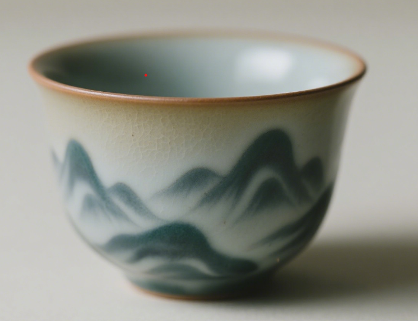

釉绿釉彩
——桂林釉陶非遗技艺
首页
非遗历程
釉陶人物
釉陶产品
釉陶荣誉
釉陶烧制
AI
桂陶・釉陶产品
以釉为墨，绘桂林山水 | 每一件釉陶，都是桂林山水的微观缩影
水系列
桂林山水杯
青釉窑变
灵感源自漓江山水，釉色窑变模拟山水云雾。
工艺：12阶还原焰烧制，还原桂林山水的青釉流动纹理。
文化关联：唐代桂州窑技法传承，将漓江烟雨融入釉色。
切面原釉杯
蓝釉窑变
灵感取自桂林岩溶地貌，釉色流动如水波。
工艺：高温还原焰，蓝釉自然流淌。
漓江云影杯
云影釉
灵感取自漓江水面倒影，釉色晕染如云影流动。
工艺：多层釉叠加，低温慢烧，形成独特云影纹。
青釉流泉杯
流泉釉
灵感源自山间流泉，釉色流动如泉水潺潺。
工艺：青釉高温流动，形成自然流泉纹。
茶具系列
自釉点钧茶具-桂林山
点钧釉
灵感源自桂林山水，点钧釉斑如山间云雾。
工艺：多次施釉，窑变斑斓。
文化关联：茶与山水共融，品味桂林意境。
青釉盖碗
青釉
灵感取自桂林山水的青翠色泽，盖碗造型端庄。
工艺：青釉高温烧制，色泽温润。
山水茶壶
山水釉
壶身绘以桂林山水，釉色层次丰富。
工艺：手工绘制，釉下彩烧制。

云水品茗杯
云水釉
杯身釉色如云似水，意境悠远。
工艺：云水釉高温烧制，色彩自然流动。
文房系列
文房石柱
山水釉
灵感取自桂林石柱，釉色如山水画卷。
工艺：釉面多层叠加，纹理自然。
文化关联：文房雅器，承载山水意趣。
山水方韵套组
山水釉
灵感源于桂林山水形态，方器造型与山水釉相融，勾勒独特意境。
翠峦文房杯
山水釉
灵感萃取桂林山峦翠色，釉色似山水漫染杯身，意境悠远。
青嶂文房杯
山水釉
灵感采自桂林青嶂山峦，釉色如山水倾泻，晕染出别致画面。
定制系列
定制专属杯
专属定制
可定制姓名篆刻、专属山水图案。
工艺：按需定制，独一无二。
文化关联：专属你的桂陶艺术品。
定制山水壶
山水壶
壶身可定制山水画面，专属设计。
定制文房器
文房器
可定制笔筒、水盂等文房器物。
敬请期待
更多定制
更多定制产品，敬请期待！
选择釉料：
青釉
蓝釉
金斑釉
烧制氛围：
还原焰
氧化焰
生成窑变效果
预览
试试调配你的‘桂林山水釉’：选釉料→选火候→看窑变